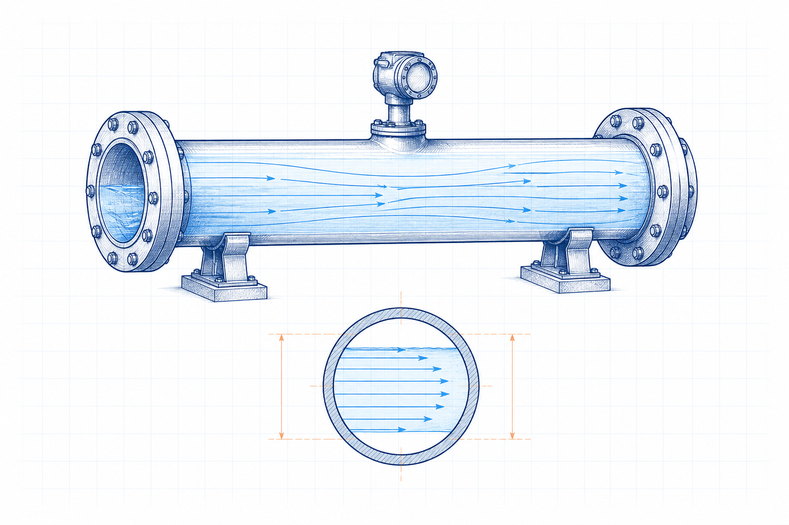

Engineering principle
Reynolds Number: Principles, Formulae and Industrial Applications
Reynolds number is a dimensionless ratio that helps classify the relative influence of inertial and viscous effects in fluid flow. It supports flow-regime assessment, similarity analysis and preliminary loss estimation.

- Content type
- Engineering principle
- Level
- Engineering › Fluid Mechanics, Piping, Pumps, Fans and Ducts › Fluid Flow Principles › Flow Regimes › Reynolds Number
- Audience
- Student · Design engineer · Project engineer · Plant engineer
- Last reviewed
- 30 August 2026
What Is Reynolds Number?
Reynolds number, Re, compares inertial effects with viscous effects in a moving fluid. It is dimensionless and is calculated with a characteristic length, velocity, density and viscosity that must all refer to the same condition.
Why Is Reynolds Number Important in Engineering?
Flow regime affects friction-factor selection, mixing, heat transfer, pressure loss and the interpretation of scale-model or laboratory results. It is an indicator, not a complete design method.
Key Terms and Definitions
- Reynolds number, Re
- Dimensionless inertial-to-viscous-effect ratio.
- Characteristic length, L
- Defined geometry length, often pipe inside diameter.
- Dynamic viscosity, μ
- Resistance to shear; SI unit Pa·s.
- Kinematic viscosity, ν
- Dynamic viscosity divided by density; SI unit m²/s.
Fundamental Principle
As inertia becomes large relative to viscosity, disturbances are more likely to persist and the flow may become more complex. The observed regime still depends on geometry, surface condition, inlet disturbance and other service details.
Formulae, Symbols and Units
Dynamic-viscosity form
Re = ρ v L / μ
Use density ρ, velocity v, characteristic length L and dynamic viscosity μ at the same condition.
Kinematic-viscosity form
Re = v L / ν
Use velocity v, length L and kinematic viscosity ν at the same condition.
Unit consistency
Both forms give a dimensionless result. Do not mix viscosity data at a different temperature with density or velocity at the operating condition.
Assumptions and Validity Range
- The characteristic length is appropriate for the geometry.
- Fluid properties are representative of the local operating temperature and composition.
- The regime interpretation is used as a screening input, not as a universal boundary.
Factors Affecting Reynolds Number
Velocity and size
Increasing velocity or characteristic length raises Re when properties are fixed.
Viscosity
Increasing viscosity lowers Re and strengthens the relative effect of viscous resistance.
Temperature
Temperature can substantially change gas or liquid viscosity and therefore Re.
Types, Classifications or Operating Cases
- Internal pipe flow using inside diameter.
- External flow over a body using a stated body dimension.
- Non-circular passages using an appropriate hydraulic or characteristic diameter.
Step-by-Step Engineering Method
- Define geometry and the location for the flow assessment.
- Obtain operating velocity and fluid properties at the same condition.
- Select and state the characteristic length.
- Calculate Re using one consistent viscosity form.
- Use a geometry-specific source or method to interpret the result.
Illustrative Engineering Example
Hypothetical example — not a design calculation
A liquid flows in a circular pipe at a known average velocity and operating temperature. The engineering task is to determine a dimensionless regime indicator before selecting an applicable loss method.
- Use the pipe inside diameter as the characteristic length and record the average velocity.
- Obtain density and viscosity at the stated operating temperature.
- Calculate Re and then use a circular-pipe reference for the next calculation step.
A single Re value does not establish pressure loss, cavitation risk or equipment suitability by itself.
Industrial Applications
- Pipe-flow and pressure-loss method selection.
- Heat-exchanger and cooling-system preliminary analysis.
- Mixing and agitation screening.
- Duct and ventilation flow studies.
- Similarity analysis for models and prototypes.
Common Mistakes and Limitations
- Using nominal rather than inside diameter without stating the basis.
- Using viscosity at ambient temperature for a hot or cold process stream.
- Treating Re as a pressure-drop result.
- Applying a circular-pipe threshold to a different geometry.
Frequently Asked Questions
Does Reynolds number have units?
No. It is dimensionless.
Can two fluids have the same Re?
Yes. Different combinations of geometry, velocity and properties can give the same dimensionless ratio.
Does a high Re guarantee turbulence?
It indicates a stronger inertial influence, but the observed regime must be interpreted for the actual geometry and boundary conditions.
References
- Munson, B. R., Okiishi, T. H., Huebsch, W. W. and Rothmayer, A. P. Fundamentals of Fluid Mechanics. 9th ed. Wiley. 2021.
- Fox, R. W., McDonald, A. T., Pritchard, P. J. and Leylegian, J. C. Fox and McDonald’s Introduction to Fluid Mechanics. 10th ed. Wiley. 2020.
This page is an original educational summary. It does not reproduce protected book text, tables, figures or standards material.